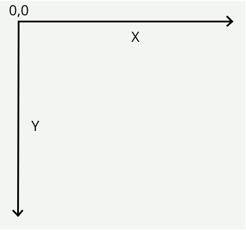

The HTML5 Canvas
Overview
Canvas is a 2D drawing API recently added to HTML and supported by most browsers. Canvas allows you to draw anything you want directly in the web browser without the use of plugins like Flash or Java. With its deceptively simple API, Canvas can revolutionize how we build web applications for all devices, not just desktops.
HTML Canvas Can:
- Draw Text
- Draw Graphics
- Be Animated
- Be Interactive
- Be Used in Games
This images give you just a taste of what is possible with Canvas:
Official Standards
Official papers that describe and define the canvas element:
The W3C defines the HTML5 standard.
WHATWG is the section of the Web Applications draft specification of the WHATWG, in which the canvas element is originally standardized.
W3C/2D is the W3C description of the HTML Canvas 2D Context
What is Canvas?
Canvas is a 2D drawing API. Essentially the browser gives you a rectanglar area on the screen that you can draw into. You can draw lines, shapes, images, text; pretty much anything you want. Canvas was originally created by Apple for its Dashboard widgets, but it has since been adopted by every major browser vendor and is now part of the HTML 5 spec.
Here's a quick example of what some Canvas code looks like:
<html>
<body>
<canvas width="800" height="600" id="canvas"></canvas>
<script>
var canvas = document.getElementById('canvas');
var c = canvas.getContext('2d');
c.fillStyle = "red";
c.fillRect(100, 100, 400, 300);
</script>
</body>
</html>
The result for the red rectanglar from the previous code:

This rectangle is drawn with the context.fillRect() function.
Note:
It's important to understand that Canvas is for drawing pixels. It doesn't have shapes or vectors. There are no objects to attach event handlers to. It just draws pixels to the screen. As we shall see this is both a strength and a weakness.
So where does it fit in with the rest of the web?
There are four ways to draw things on the web:
- Canvas
- SVG
- CSS
- DOM animation
Canvas differ from the other three:
SVG
SVG is a vector API that draws shapes. Each shape has an object that you can attach event handlers to. If you zoom in the shape stays smooth, whereas Canvas would become pixelated.
CSS
CSS is really about styling DOM elements. Since there are no DOM objects for things you draw in Canvas you can't use CSS to style it. CSS will only affect the rectanglar area of the Canvas itself, so you can set a border and background color, but that's it.
DOM animation
The DOM, or Document Object Model, defines an object for everything on the screen. DOM animation, either by using CSS or JavaScript to move objects around, can be smoother in some cases than doing it with Canvas, but it depends on your browser implementation.
Usage
- Use SVG when you have existing shapes that you want to render to the screen, like a map that came out of Adobe Illustrator.
- Use CSS or DOM animation when you have large static areas that you wish to animate, or if you want to use 3D transforms.
- Canvas is a great choice for charts, graphs, dynamic diagrams, and of course video games.
Browser Support
Desktop Browser
Canvas is now a stable API and most modern browsers support it to some extent.
| Desktop Browser | Version |
|---|---|
| Safari | 3.0+ |
| Chrome | 10+ |
| Opera | 9+ |
| FireFox | 4.0+ |
| Internet Explorer | 9.0+ |
Mobile Browser
Most smartphone platforms support it because most of them are based on WebKit, which has long had good support.
| Mobile Browser | Version |
|---|---|
| iOS | all |
| webOS | all |
| Android | 2.0+ |
| BlackBerry | Playbook and OS 6.0+ |
| Windows Phone 7 | none |
Paths
Paths are shapes created by a bunch of straight or curved line segments. In Canvas you must first define a path with beginPath(), then you can fill it, stroke it, or use it as a clip. You define each line segment with functions like moveTo(), lineTo(), and bezierCurveTo().
This example draws a shape with a move to, followed by a bezier curve segment, then some lines. After creating the path it fills and strokes it.

Code for the shape above:
c.fillStyle = 'red';
c.beginPath();
c.moveTo(10,30);
c.bezierCurveTo(50,90,159,-30,200,30);
c.lineTo(200,90);
c.lineTo(10,90);
c.closePath();
c.fill();
c.lineWidth = 4;
c.strokeStyle = 'black';
c.stroke();
Coordinate System
Canvas has the origin in the upper left corner with the y axis going down. But if you want a different origin you can do that with transforms. Besides, canvas spec defines coordinates at the upper left corner of a pixel.
Images
Canvas can draw images with the drawImage function.
There are several forms of drawImage:
You can draw the image directly to the screen at normal scale, or stretch and slice it how
you like.
ctx.drawImage(img, 0,0); //normal drawing
ctx.drawImage(img, //draw stretched
0,0,66,66, //source (x,y,w,h)
100,0,100,100//destination (x,y,w,h)
);
ctx.drawImage(img, //draw a slice
20,10,20,20, //source coords (x,y,w,h)
250,0,250,50//destination coords (x,y,w,h)
);
Text
The font attribute is the same as its CSS equivalent, so you can set the style, size, and font family. Note that the fillText(string,x,y) function draws using baseline of the text, not the top.

ctx.fillStyle = "black";
ctx.font = "italic "+44+"pt Arial ";
ctx.fillText("this is text", 11,123);
Gradient
Canvas can also fill shapes with gradients instead of colors.
Here's a linear gradient:

var grad = ctx.createLinearGradient(0,0,200,0);
grad.addColorStop(0, "white");
grad.addColorStop(0.5, "red");
grad.addColorStop(1, "black");
ctx.fillStyle = grad;
ctx.fillRect(0,0,400,200);